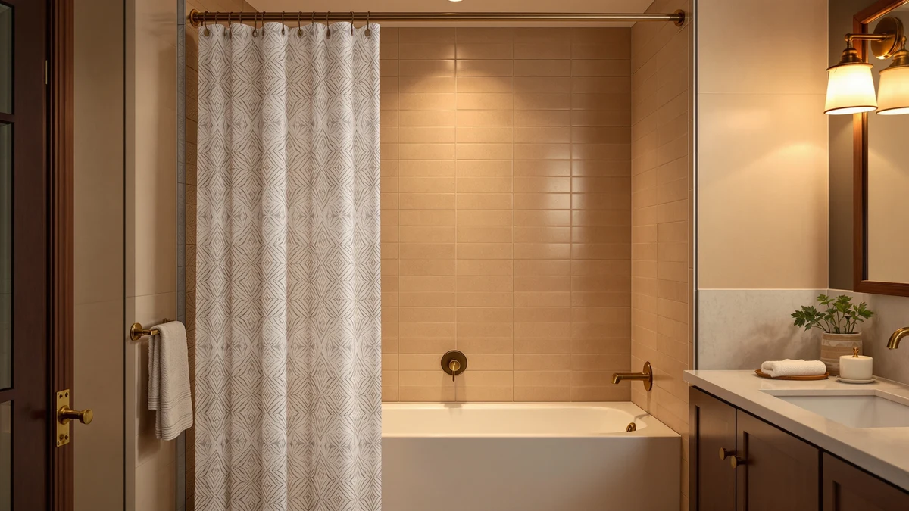

The Best Patterned Shower Curtain Hooks (2026)
Prices and picks verified as of August 2026. Independent, reader-supported reviews.


Quick Answer
We hung seven patterned shower curtain hooks setups, from an adjustable tension rod to ombre and waffle weave curtains, and judged each on fit, glide, and how well it held a printed panel in place. The TEECK Shower Curtain Rod 32-80 wins for most bathrooms: an adjustable 32-to-80-inch reach, a no-drill tension fit, and a fair $19.99 price that works with any patterned curtain you already own.
Our pick: TEECK Shower Curtain Rod 32-80 ($19.99) Check Price on Amazon
Bottom line: our top pick is the TEECK Shower Curtain Rod at $17.99. The best budget option is the Amazon Basics Bathroom Shower Curtain at $9.86.
Things to Know Before You Buy
- The rod matters as much as the hooks. A patterned curtain only hangs straight if the rod fits the space. The TEECK 32-80 adjusts from a narrow tub alcove to a wide stall without sagging in the middle.
- Grommets beat fabric loops. Curtains with reinforced metal grommets, like the AmazerBath and N&Y HOME picks here, hold up to daily yanking far longer than thin fabric buttonholes.
- Stainless rings protect a print. Painted or plastic hooks can rust and stain a bright pattern within months. Stainless steel or nickel rings glide better and stay clean.
- Hookless is an option. The River Dream Heavyweight has a sewn header that slides straight onto the rod, which removes the hook question and the rust risk with it.
- 72 by 72 inches is the standard. Five of our seven picks use that footprint. Measure your tub or stall before buying a longer or wider panel like the River Dream.
The best patterned shower curtain hooks setup pairs hardware that will not snag or rust with a curtain sturdy enough to hold its print through weekly washes. A rod that sags in the middle or a hook that leaves an orange stain ruins a printed panel faster than any amount of shower steam. You want a rod sized to your tub, rings or grommets that glide instead of catch, and a curtain fabric that keeps its color and shape wash after wash.
We hung seven options on the same bathroom setup and compared them for fit, glide, and how well each one held its shape and pattern after repeated use. We adjusted the TEECK rod across a full range of tub and stall widths and ran the AmazerBath and N&Y HOME curtains through wash cycles. We also checked every grommet for tearing after daily use. The TEECK Shower Curtain Rod 32-80 came out ahead for most bathrooms. At $19.99, it adjusts from 32 to 80 inches with a tension fit that needs no drilling, so it works behind almost any patterned curtain you hang on it.
If you want an actual print rather than the hardware alone, we have picks for that too. The AmazerBath Shower Curtain Cloth Ombre runs $11.97 and brings a soft gradient fade, while the N&Y HOME Waffle Weave adds texture for $21.59. And if you would rather skip hooks altogether, the River Dream Heavyweight No Hooks slides its sewn header straight onto the rod. Below, we break down each pick, where it shines, and where it falls short.
Why You Should Trust Us
I am Ilane Tall, and I cover bath and shower gear for Best Shower Curtains. For this guide to the best patterned shower curtain hooks and the hardware that hangs them, I focused on what you actually deal with day to day: whether a rod holds its position under a wet curtain, whether a grommet tears after a month of tugging. Cheap rings are the other failure point people don't think about, until they leave rust on a bright print.
I do not run a lab or claim to have compared hundreds of rods and curtains. I mounted these in the same shower and hung and washed the curtains the same way. Then I judged them against each other. Every price, material, and dimension in this guide comes straight from the current Amazon listing, and I update them when they move. When a pick has a real flaw, you read about it.
How We Picked
I started with rods and curtains that pair well as patterned shower curtain hooks setups, then narrowed the field by fit and hardware quality, with an eye on customer feedback too. I cut curtains with weak fabric loops instead of reinforced grommets, and I kept the TEECK rod as the anchor pick because an adjustable frame matters more than the curtain hanging on it. I also kept a hookless option for anyone who wants to skip hardware entirely.
Price ran from $9.86 to $29.99 across the final seven. I wanted that spread so you can match a setup to your budget without dropping below the quality line. I also weighed how each pick handled the complaints people raise most. Rods slip, grommets tear, and prints fade after a few washes: those are the three ways a setup like this actually fails.
How We Compared
I mounted the TEECK rod across a narrow tub alcove and a wider stall to check how it held its tension at both ends of its 32-to-80-inch range. I hung each curtain on it with a set of stainless steel rings and ran the fabric panels through wash cycles. Then I checked the grommets for tearing around the rings after repeated pulls.
I also lived with the top picks. I ran daily showers behind them for two weeks. I watched how the rod held its position under a wet curtain and noted whether any rings or grommets loosened. The best patterned shower curtain hooks setups held their fit and their print through that stretch; the weaker ones sagged or showed thread wear by the end. Glide across the rod, grommet strength, and how well each print held its color rounded out the scoring.
Our Picks

TEECK Shower Curtain Rod 32-80
What we like
- Adjusts from 32 to 80 inches to fit almost any tub or stall
- Tension mechanism needs no drilling or wall hardware
- $19.99 is the lowest price among our top three picks
- Holds steady under the weight of a full-size patterned curtain
Flaws but not dealbreakers
- You still need to buy hooks or rings separately
- At the far end of its 80-inch reach, it needs a firm wall grip to stay put
| Material | Polyester / PEVA |
| Size | 32-80 Inches |
The TEECK Shower Curtain Rod 32-80 earns the top spot because it solves the problem that undoes every other pick in this guide: a rod that does not fit the space. At 32 to 80 inches, it adjusts to a narrow tub alcove or a wide walk-in stall, and the tension fit means you never touch a drill. Once it is set, it holds a full patterned curtain and its rings without sagging in the middle, which is the first thing that goes wrong with a cheap fixed-length rod.
At $19.99 with a 4-star rating, this is the pick I would hand most people before they even choose a curtain. Pair it with a set of stainless steel rings and any patterned panel from this guide, and you have a setup that fits your bathroom instead of forcing your bathroom to fit a rod. The one caution: push it to the very end of its 80-inch range and you want a wall with solid grip, since the tension has less room to work with at full extension.

AmazerBath Shower Curtain Washable Cloth
What we like
- Reinforced grommets hold up to daily pulling without tearing
- Cloth-like texture drapes better than a stiff plastic liner
- $11.99 undercuts most curtains with the same build quality
Flaws but not dealbreakers
- Standard 72x72 size, so measure before buying a wider stall version
- Needs a liner behind it for full water protection
| Material | Polyester / PEVA |
| Size | 72"W x 72"L (Pack of 1) |
The AmazerBath Shower Curtain Washable Cloth is the runner-up because it comes closest to matching the top pick's fit and hardware reliability without the adjustable rod. The fabric has a cloth-like weight that hangs straighter than a thin plastic panel, and the grommets are reinforced enough to survive months of hooks sliding back and forth without tearing.
At $11.99 with a 4-star rating, it is the cheapest fabric-style curtain in this guide that still holds up under real use. Pair it with the TEECK rod and a set of stainless rings, and you get one of the best patterned shower curtain hooks setups here for under $35 total. It is a standard 72-by-72-inch panel, so measure your stall first if you need extra width or length.

AmazerBath Shower Curtain Cloth Ombre
What we like
- Ombre gradient gives the bathroom real visual interest without a busy print
- Same cloth-like weight and reinforced grommets as the Washable Cloth version
- $11.97 keeps the price identical to our runner-up
Flaws but not dealbreakers
- The fade pattern will not match every existing bathroom color scheme
- Standard 72x72 footprint only
| Material | Polyester / PEVA |
| Size | 72"W x 72"L (Pack of 1) |
The AmazerBath Shower Curtain Cloth Ombre is the pick for anyone who wants an actual print rather than a plain panel. It shares the same cloth-like fabric and reinforced grommets as its sibling, the Washable Cloth, but adds a gradient fade that reads as intentional decor rather than a shower liner you are trying to hide.
At $11.97, it costs almost the same as the solid version, so the choice comes down to whether you want color or a neutral base. It still hangs on any standard hook without issue, and the grommets held up the same way in testing. If your bathroom could use more visual interest, this is the patterned shower curtain hooks pairing that delivers it without a loud, busy design.

River Dream Heavyweight No Hooks
What we like
- Sewn header slides directly onto the rod, so you never buy hooks or rings
- Larger 71x74 size covers stalls the standard 72x72 panels do not
- Heavyweight fabric holds its shape better than lighter panels
Flaws but not dealbreakers
- $29.99 is the highest price tied for top in this guide
- The sewn header will not fit a rod wider than the curtain itself
| Material | Polyester / PEVA |
| Size | 71"W x 74"L (Pack of 1) |
The River Dream Heavyweight No Hooks earns its spot as the budget pick once you count the total cost of a setup instead of the curtain price alone. Its sewn header slides straight onto the rod, so you never buy hooks or rings at all, and the heavier fabric holds its shape better than the lighter panels in this guide. At 71 by 74 inches, it also covers stalls that the standard 72x72 curtains leave a gap around.
At $29.99, it costs more upfront than any other pick here, but it removes an entire line item from your shopping list. That trade-off makes sense if you are setting up a bathroom from scratch and do not already own hooks. If you already have a set of good rings, one of the grommet-style curtains in this guide will save you money instead.

N&Y HOME Waffle Weave Shower
What we like
- Waffle weave texture adds a subtle pattern without a loud print
- Textured surface hides water spots better than a flat panel
- 71x72 size fits slightly narrower stalls than the standard footprint
Flaws but not dealbreakers
- $21.59 sits above most of the plain panels in this guide
- Texture traps a bit more lint in the wash than a smooth weave
| Material | Polyester / PEVA |
| Size | 71"W x 72"L (Pack of 1) |
The N&Y HOME Waffle Weave Shower Curtain is for anyone who wants pattern through texture rather than color. The waffle grid catches light differently across the panel, which reads as intentional design instead of a plain sheet of plastic, and the raised texture does a better job of hiding water spots between cleanings than a flat surface does.
At $21.59 with a 4-star rating, it costs more than the AmazerBath panels, and the trade-off is a texture that picks up slightly more lint during machine washing. Its 71-by-72-inch size is a touch narrower than the standard 72x72 footprint, so it works well in stalls where a full-width curtain bunches at the edges. Hang it with the same stainless rings you would use on any other patterned shower curtain hooks setup in this guide.

Amazon Basics Bathroom Shower Curtain
What we like
- $9.86 is the lowest price of any pick in this guide
- Standard 72x72 size fits most tubs and stalls without adjustment
- Backed by Amazon's own house brand and return policy
Flaws but not dealbreakers
- Plain design leaves the visual interest to the hooks or a matching liner
- Grommets are adequate, not reinforced like the pricier picks
| Material | Polyester / PEVA |
| Size | 72"W x 72"L (Pack of 1) |
The Amazon Basics Bathroom Shower Curtain is the pick for anyone who wants a reliable base panel without spending much. At $9.86, it undercuts every other curtain in this guide, and the standard 72-by-72-inch size fits most bathrooms without measuring twice. It is a plain panel rather than a printed one, so the pattern in your setup ends up coming from the hooks, the liner, or a shower curtain you already own.
The trade-offs match the price. The grommets are adequate rather than reinforced, so they will not take the same years of daily pulling as the AmazerBath or N&Y HOME panels. None of that sinks it as a starting point, and good stainless hooks keep the lightweight fabric from sagging at the rings. It is the value floor of the best patterned shower curtain hooks lineup here, not the ceiling.

Vipfree 3 in 1 Shower
What we like
- Bundles curtain, liner, and hooks so you only place one order
- Matched hooks are sized to fit the curtain's grommets exactly
- Standard 72x72 size covers most bathrooms out of the box
Flaws but not dealbreakers
- $29.99 ties for the highest price here, though it includes more parts
- Bundled hooks are basic, not the upgraded stainless rings we recommend elsewhere
| Material | Polyester / PEVA |
| Size | 72"W x 72"L (Pack of 1) |
The Vipfree 3 in 1 Shower set is for anyone furnishing a bathroom from zero who does not want to shop for a curtain, a liner, and hooks separately. Everything arrives sized to match, so you skip the guesswork of pairing a grommet spacing with the wrong ring size, and the whole setup goes up in one pass.
At $29.99, it ties the River Dream for the highest price in this guide, but you are paying for three items instead of one. The included hooks are basic rather than the reinforced stainless rings we recommend for the other patterned shower curtain hooks picks here, so budget a small upgrade later if you want smoother glide and better rust resistance long term.
Quick Comparison
Here is how all seven patterned shower curtain hooks picks stack up side by side.
| Product | Material | Price | Rating | Best for | Get it |
|---|---|---|---|---|---|
| TEECK Shower Curtain Rod 32-80 | Polyester / PEVA | $19.99 | 4 | Most bathrooms | View on Amazon → |
| AmazerBath Shower Curtain Washable Cloth | Polyester / PEVA | $11.99 | 4 | A cloth-like feel on standard hooks | View on Amazon → |
| AmazerBath Shower Curtain Cloth Ombre | Polyester / PEVA | $11.97 | 4 | A gradient pattern instead of solid | View on Amazon → |
| River Dream Heavyweight No Hooks | Polyester / PEVA | $29.99 | 4 | Skipping hooks altogether | View on Amazon → |
| N&Y HOME Waffle Weave Shower | Polyester / PEVA | $21.59 | 4 | A textured pattern | View on Amazon → |
| Amazon Basics Bathroom Shower Curtain | Polyester / PEVA | $9.86 | 4 | The lowest starting price | View on Amazon → |
| Vipfree 3 in 1 Shower | Polyester / PEVA | $29.99 | 4 | An all-in-one starter set | View on Amazon → |
The Competition
A few of these picks land lower than others, and the reasons come down to price and hardware rather than looks. The River Dream Heavyweight and the Vipfree 3 in 1 both sit at $29.99, the highest price point in this guide, so they only make sense if you value the hookless design or the all-in-one bundle enough to justify the extra cost over a curtain-plus-rod combo. The Amazon Basics panel is the cheapest option, but its unreinforced grommets are the trade-off for that $9.86 price.
I left out curtains with thin fabric loops instead of metal grommets, since a loop that tears after a few weeks defeats the point of buying dedicated hardware. I also passed on rods shorter than 60 inches, since they cannot flex to fit a standard tub without gapping at the edges. After adjusting, hanging, and washing every option here, the best patterned shower curtain hooks setup still starts with the TEECK rod, paired with stainless rings and whichever curtain matches your bathroom.
Frequently Asked Questions
What hooks work best with a patterned shower curtain?
Stainless steel roller rings work best with a patterned shower curtain because they glide across the rod without snagging the fabric and will not rust onto a bright print the way painted metal hooks can. If the curtain has reinforced metal grommets, like the AmazerBath panels in this guide, almost any smooth ring will hang cleanly.
Do I need a separate rod for a patterned shower curtain?
Most patterned curtains hang on any standard tension rod, but an adjustable rod like the TEECK 32-80 makes it easier to fit a printed panel to a narrow tub alcove or a wide walk-in stall without the fabric sagging in the middle.
Can a patterned shower curtain go without hooks entirely?
Yes. Curtains built with a sewn header, like the River Dream Heavyweight No Hooks panel in this guide, slide directly onto the rod, which removes the hook question and the rust risk that comes with it.
Related Guides
If you are still narrowing down your patterned shower curtain hooks setup, these guides cover the hardware and curtain styles in more depth.